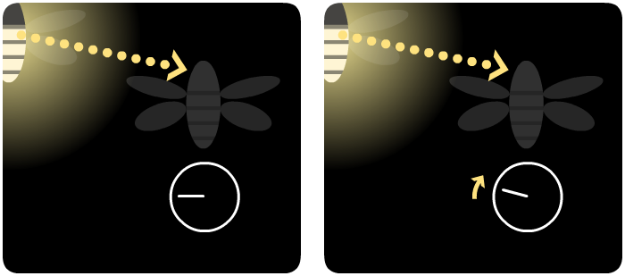

"Pirilampos"
Como luzes de Natal a flutuar suavemente no ar, pirilampos acrescentam sempre um pouco de magia às florestas em que vivem.

Mas algumas espécies de pirilampos acrescentam ainda mais magia. No sudeste da Ásia, se fores até à margem do rio no meio da noite, serás presenteado com este impressionante show de luzes - cortesia do pirilampo da Tailândia:
Um manguezal inteiro a iluminar-se de uma vez só, mergulhando na escuridão, e então iluminando tudo outra vez - numa sincronia quase perfeita. Como é que milhares de pirilampos se coordenam uns com os outros? Quem é o maestro desta sinfonia silenciosa?
Isto foi um mistério por quase um século e, em 1992, uma equipa de cientistas americanos decidiu resolvê-lo. Infelizmente, mas não surpreendentemente, a imprensa gozou com eles — “O Governo queima os nossos impostos €€ para estudar pirilampos em Bornéu: Não é uma ideia brilhante!” disse uma revista. Implacáveis, os cientistas seguiram em frente, câmaras e calculadoras nas mãos.
Então, como é que milhares de pirilampos escolhem um líder para seguir, um maestro para manter os seus sinais luminosos em sincronia? A resposta, os cientistas descobriram, é simples:
Eles não escolhem.
Cada pirilampo tem o seu próprio relógio interno individual, e sempre que o relógio “bate as doze horas”, ele pisca.

E em vez de sincronizar os seus relógios com um líder central, cada pirilampo faz o seguinte:
Etapa 1: quando vê um sinal luminoso próximo de outro pirilampo, adianta um pouco o seu relógio.

Etapa 2: e é isso.
Será que uma interação tão pequena e de curto alcance pode realmente fazer uma floresta inteira de pirilampos piscar numa harmonia sincrónica? Só há uma maneira de descobrir...
Espera. Vê com atenção.
O que é que vês?
No início, não muito. Os pirilampos ainda parecem estar a piscar sem um padrão.
Mas, depois de um tempo, vais notar pequenos grupos de pirilampos a piscarem juntos — mas esses grupos individuais ainda estão dessincronizados.
Depois de um pouco mais de tempo, vais começar a ver pirilampos a fazer uma "onda", como fãs empolgados nas bancadas durante um jogo de beisebol.
Finalmente, todos, exceto alguns pirilampos, piscam juntos — e, eventualmente, até mesmo os atrasados juntam-se à dança coletiva.
Há algo mais incrível do que isso? Se interromperes estes pirilampos causando algum caos...
... sim, isso pode fazer com que eles se dividam por um momento, mas lenta e certamente, eles recompor-se-ão e brilharão como um.
Aqui estão mais alguns botões e barras deslizantes que podes usar, para brincar com estes pirilampos virtuais:
E este é o segredo por trás do truque de magia dos nossos pirilampos:
Acontece que os pirilampos não são as únicas coisas que se sincronizam de baixo para cima. Os teus neurónios criam ondas cerebrais. As células do pacemaker do teu coração disparam em sincronia. Até mesmo um monte de metrónomos sem vida numa plataforma instável começarão a marchar juntos. Além de tudo isso, entender a auto-sincronia ajudou-nos a construir melhores lasers, computadores e tecnologia de comunicação!
E pensar que a matemática dos sistemas de auto-sincronização foi descoberta em parte por alguns cientistas que realmente amavam pirilampos. Parece que chamar o projeto deles de “Não é uma Ideia Brilhante” não foi uma ideia brilhante.
. . .
Tu flutuas em conjunto, suavemente, em silêncio, ocasionalmente pontuando a escuridão com um pequeno ponto de luz brilhante. Sozinho, não há muito para ver.
Mas, sempre que brilhas, inspiras aqueles perto de ti a brilharem também, um pouco mais cedo do que eles brilhariam. E aqueles perto de ti, por sua vez, inspiram aqueles perto deles.
E assim por diante.
Primeiro, alguns pequenos grupos começam a piscar juntos. Depois, uma onda de luz varre o enxame. Finalmente, estão todos deslumbrantes juntos, um farol brilhante, todos em harmonia, em tandem — em sincronia.
Que interação em pequena escala farás hoje, pequeno pirilampo?
Inspirado no livro de Steven Strogatz,
SYNC: How Order Emerges From Chaos In the Universe, Nature, and Daily Life
Criado por Nicky Case, com o amor e apoio dos meus colaboradores (vê todos aqui)
“Pirilampos” é um código aberto, dedicado ao domínio público. (Obtém o código no Github!)
partilha com o teu enxame:
traduções de fãs:
中文 (chinês)
português (português brasileiro)
français (francês)
deutsch (alemão)
türkçe (turco)
pусский (russo)
עברית (hebraico)
magiar (húngaro)